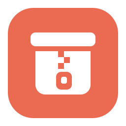

Mini
Zip
Dev v1.0.0
设计审批
01 / APPLICATION ICON
应用图标
A
拉链盒

直观识别压缩文件，延续珊瑚色。
16
24
32
48 px
B
拉链文件夹
熟悉的文件夹轮廓，无外层底板。
16
24
32
48 px
C
M 字母标
字母与拉链结合，品牌感更强。
16
24
32
48 px
D
轻量开箱
打开的归档盒，强调解压动作。
16
24
32
48 px
窗口标题栏
MiniZip
Dev v1.0.0
文件关联
工作文档.zip
MiniZip 压缩文件
深色任务栏
02 / QUICK COMPRESS
右键快速压缩
独立小窗口 · 审批稿
MiniZip
快速压缩
工作文档
1 个文件夹
·
24 个文件
·
18.6 MB
压缩包名称
.zip
格式
ZIP
7Z
保存位置
压缩级别
快速
标准
更小体积
密码保护
密码
确认范围
启动方式
文件或文件夹右键 → 添加到压缩文件…
窗口
只打开快速压缩小窗口，不显示主工作台。
默认值
同级目录、原文件名、ZIP、标准压缩。
原文件
保持不变；遇到同名压缩包需再次确认。
图标与此窗口均待确认，未接入真实压缩。